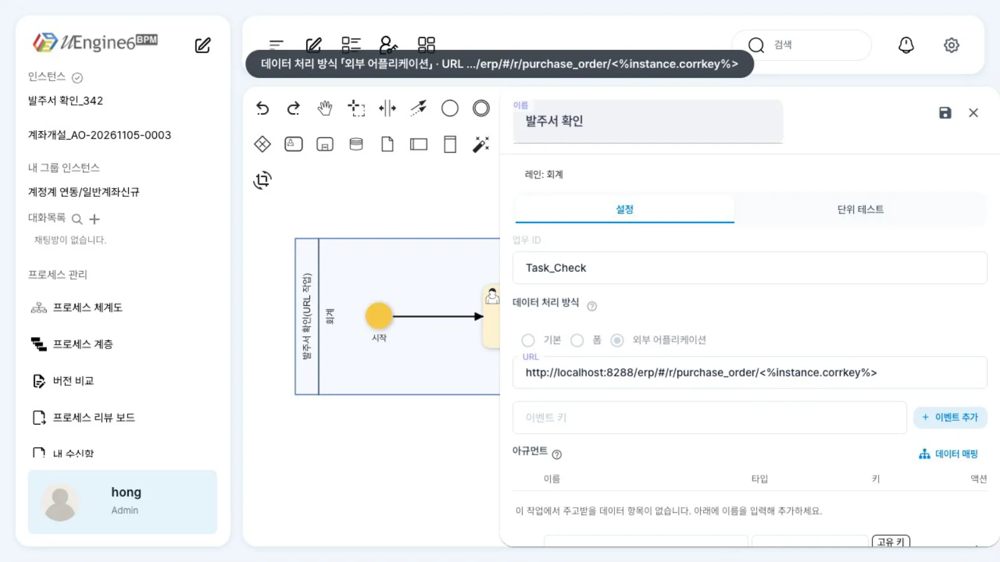
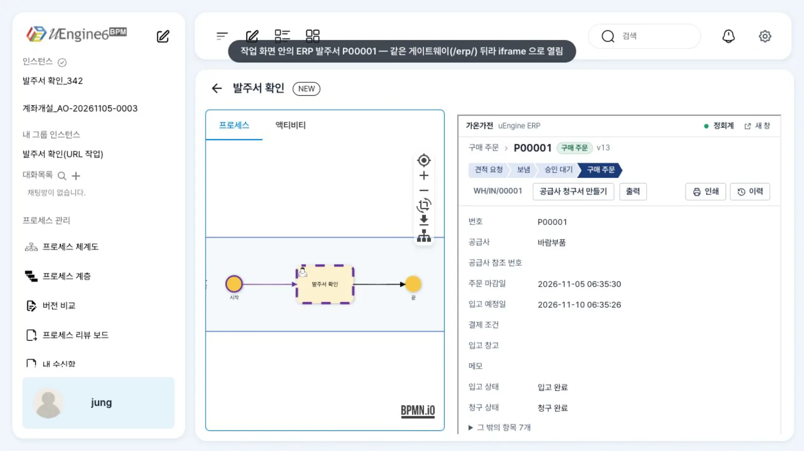
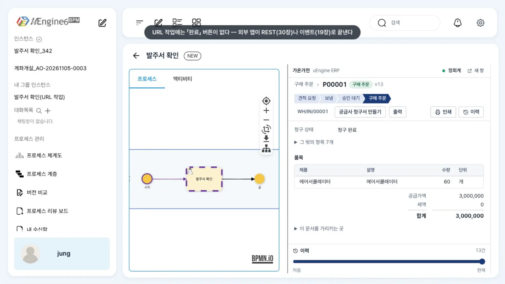

URL 작업은 다른 시스템의 화면을 BPM 작업 화면 안에
iframe으로 띄웁니다. 주소에<%instance.corrkey%>같은 값의 자리를 두면 인스턴스마다 해당 건의 화면이 열립니다. 작업은 외부 앱이 이벤트나 REST로 끝냅니다.
무엇을 · 왜#
ERP의 입고 전표나 계정계의 계좌개설처럼 이미 다른 시스템의 화면에서 처리하는 업무가 있습니다. 같은 입력 칸을 BPM 폼으로 다시 만들 필요 없이, 그 화면을 작업 안에 띄우고
BPM은 「누가, 언제, 다음은 무엇」만 맡습니다. Camunda의 외부 폼(external form, formKey에 URL)과 비슷하지만, uEngine6는 작업 화면 안에 그 주소를 직접 엽니다.
| 무엇 | 정의에서 |
|---|---|
| 작업 종류 | 사람 작업 _type: org.uengine.kernel.URLActivity (모델러 「데이터 처리 방식」 「외부 어플리케이션」) |
| 주소 | url — <%instance.corrkey%>(상관 키), <%=변수%>, <%=instance.instanceId%>를 실행할 때 바꿔 넣음 |
| 업무 화면 | 작업 항목의 tool = urlHandler:<바뀐 주소> → 작업 화면 오른쪽 iframe#url-iframe |
| 끝내는 법 | 그 앱이 이벤트를 보내 끝냄(eventSynchronizations, 작업을 이벤트로 끝내기) 또는 REST POST /work-item/{taskId}/complete (REST API) |
URL 작업의 업무 화면에는 「완료」 버튼이 없습니다. 일을 끝냈다는 사실은 그 화면을 제공하는 외부 앱이 알려 줘야 합니다.
이 장의 예제
프로세스 튜토리얼/URL작업/발주서확인 — 레인 하나(「회계」, 사용자 직접 지정 jung)에 「발주서 확인」 하나. 주소는 ERP 예제의 「공급사 청구서 등록」과 같은
http://localhost:8288/erp/#/r/purchase_order/<%instance.corrkey%>입니다. 인스턴스를 시작할 때 correlationKeyValue로 ERP 발주서 id를 넘깁니다.
ERP의 데이터는 보기만 하고 바꾸지 않습니다. ERP와 BPM을 이벤트로 끝까지 잇는 예제는 ERP: 구매 발주 결재와 대금 지급, 계정계 화면을 같은 방식으로 띄우는 예제는 금융: 계정계와 이벤트로만 잇기에 있습니다.
따라 하기#
- 작업 패널. 홍길동으로
튜토리얼/URL작업/발주서확인을 열고 연필 아이콘을 누른 뒤 「발주서 확인」을 더블클릭합니다. 「데이터 처리 방식」이 「외부 어플리케이션」이고, 「URL」 칸에http://localhost:8288/erp/#/r/purchase_order/<%instance.corrkey%>가 있습니다. 그 아래 「이벤트 키」와 「+ 이벤트 추가」는 이 작업을 이벤트로 끝낼 때 씁니다(작업을 이벤트로 끝내기). 저장하지 않고 닫은 뒤 자물쇠 아이콘으로 잠금을 풉니다.
외부 어플리케이션 패널 - 인스턴스 시작. 정회계가 상관 키에 ERP 발주서 id를 넣어 시작합니다(첫 작업의 레인이 정회계이므로 시작하는 사람도 정회계여야 합니다). 작업 항목의
tool이urlHandler:http://localhost:8288/erp/#/r/purchase_order/<발주서 id>로 바뀐 것을 확인할 수 있습니다.curl -X POST http://localhost:9294/instance -H "Authorization: Bearer $JUNG_TOKEN" -H 'Content-Type: application/json' \ -d '{"processDefinitionId":"튜토리얼/URL작업/발주서확인","correlationKeyValue":"<ERP 발주서 id>", "roleMappings":[{"name":"회계","endpoints":["jung"]}]}' - 작업 열기. 정회계(
jung)의 업무 목록에서 「발주서 확인」을 엽니다. 오른쪽에 ERP 발주서P00001(공급사 바람부품, 에어서큘레이터 60개, 3,000,000원)이 그대로 뜹니다. ERP 웹은 같은 게이트웨이 뒤(/erp/)에 있어 같은 출처로 열립니다. ERP는 iframe 안에서 메뉴 없는 임베드 모드로 표시됩니다. ERP 로그인은 ERP가 따로 확인합니다(정회계는 ERP에도 로그인해 있어야 합니다).
작업 안의 ERP 발주서 - 끝내기. 이 화면에는 「완료」가 없습니다. 외부 앱이 일을 마치면 이벤트나 REST로 작업을 끝냅니다. 이 장에서는 REST로 끝냈습니다. 업무 목록에서 카드가 사라지고 인스턴스가 끝납니다.

완료 버튼이 없는 URL 작업 화면 curl -X POST http://localhost:9294/work-item/<taskId>/complete -H "Authorization: Bearer $JUNG_TOKEN" -H 'Content-Type: application/json' -d '{"parameterValues":{}}'
설정 레퍼런스#
정의(발췌)#
{"_type": "org.uengine.kernel.URLActivity", "role": "회계",
"url": "http://localhost:8288/erp/#/r/purchase_order/<%instance.corrkey%>",
"description": {"text": "ERP 발주서의 공급사·수량·금액을 확인합니다"}}
이벤트로 끝내려면 eventSynchronizations를 추가합니다(ERP 예제의 「입고 처리」).
"eventSynchronizations": [{"eventType": "PickingValidated",
"attributes": [{"name": "poId", "className": "String", "isKey": true, "isCorrKey": true}]}]
주소 안의 자리#
| 자리 | 바뀌는 값 |
|---|---|
<%instance.corrkey%> |
인스턴스의 상관 키(시작할 때 correlationKeyValue, 메시지 시작 이벤트의 correlationKey) |
<%=변수이름%> |
그 프로세스 변수의 값 |
<%=instance.instanceId%> |
인스턴스 번호 |
같은 출처와 다른 출처#
| 경우 | 열리는가 | 할 일 |
|---|---|---|
같은 출처(게이트웨이 뒤 경로, 예: /erp/**) |
열림 | 게이트웨이에 라우트 추가(아래). 화면 쪽 프레임 금지가 있어도 'self' 면 통과 |
다른 출처(예: 계정계 창구 http://localhost:5174) |
그 앱이 iframe을 허용할 때만 열림 | 그 앱의 X-Frame-Options·CSP frame-ancestors에 BPM 주소를 허용. 쿠키 로그인은 서드파티 쿠키 차단에 걸릴 수 있음 |
# keycloak-gateway application.yml — 프런트 catch-all(/**) 보다 앞에
- id: erp-web
uri: http://localhost:5302
predicates:
- Path=/erp, /erp/**
업무 화면은 iframe 안의 앱이 보내는 postMessage 중 주소와 같은 출처에서 온 것만 받고, 메시지의 eventType이 작업의 이벤트와 같으면 진행 표시를 갱신합니다(작업을 끝내는 것은 서버로 전달된 이벤트입니다).
알려진 제약#
이 브랜치에서 확인한 것
- URL 작업 화면에는 「완료」 버튼이 없습니다(시뮬레이션 실행에서만 「제출 완료」가 보입니다). 외부 앱의 이벤트나 REST로 끝내야 합니다.
- 1280 폭 화면에서는 오른쪽 iframe이 좁습니다. 사이드바를 접거나 화면을 넓혀 쓰세요.
- 시작 응답(
POST /instance)의corrkey는 비어 보이지만, 인스턴스에는 저장되어 주소가 바뀝니다. - 첫 사람 작업의 레인에 담당자 규칙이 있으면, 시작하는 사람이 그 규칙에 맞아야 합니다. 맞지 않으면
POST /instance가 500(You (…) are not permitted to initiate this process) 오류를 반환합니다. 이 예제는 정회계가 시작합니다.
확인 문제#
사내 앱 `https://app.example.com`의 화면을 URL 작업으로 띄웠더니 빈 상자만 보입니다. 무엇을 확인하나요?
그 앱이 다른 출처의 iframe 안에서 열리는 것을 막는지(X-Frame-Options, CSP frame-ancestors) 확인합니다. 막는다면 그 앱에서 BPM 주소를 허용하거나, ERP 예제처럼 게이트웨이 뒤 경로로 붙여 같은 출처로 만듭니다.
인스턴스마다 다른 발주서가 열리게 하려면 주소에 무엇을 넣나요?
<%instance.corrkey%>처럼 인스턴스마다 다른 값의 자리를 넣습니다. 시작할 때 correlationKeyValue로 발주서 id를 넘기거나, 발주서 id를 변수로 받아 <%=발주서ID%>로 씁니다.
URL 작업은 누가 끝내나요?
그 화면을 제공하는 외부 앱입니다. 일을 마치면 Kafka 이벤트(작업의 eventSynchronizations)를 보내거나 REST POST /work-item/{taskId}/complete를 호출합니다. BPM 작업 화면에는 「완료」가 없습니다.